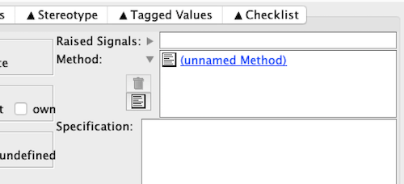

Operation declarations are generated in the appropriate package specification.
Normally, the body is generated as a body stub in the corresponding package body, and separate proper bodies (this is the reason why all the operations of all but protected types, and all the operations of a class bar entries, must have distinct names; see ARM 10.1.3 (14)).
The proper bodies are compilable, but raise a Not_Yet_Implemented exception if called. They are initially generated in domain.gen; move them to domain.impl, change the protection to read/write, and edit as required (remembering to remove the 'Edit this' comment at the top!)
With some limitations, it's possible instead to specify an operation's body content in the model. This has the advantage of reducing the number of implementation files to be kept under configuration management, and also makes it much simpler to change the name and profile of an operation.
Given a class with an operation (Is_Set) selected,
the left of the lower panel looks like
and the right like
Click on the arrowhead by Method
and click on the text (lower) icon, which brings up a box into which you can enter the code (this is a very unreal example! more later ...)
"
To save, go to the left of the panel,
"
and click on the left arrowhead by the Specification; the right of the panel now shows one (unnamed) method, which you can revisit by double-clicking on it.
"
ColdFrame only allows one method. If you accidentally create
another, you can delete it (it will be the bottom one, but do check!)
by selecting it and clicking on the wastebin icon.
The given body text is inserted into the generated code as-is
(properly indented). You can't add code to the subprogram's
declarative region.
However, you can use a declare block: for the Is_Set
function above, this could look like
You'll have to write the code anyway, but you might consider that
that is about at the limit of what's manageable.
ColdFrame adds context clauses (withs) to the class
package body for all classes related to this class and for
associations in which this class is mentioned.
If you need more, you'll have to implement the operation in a
proper body.
Limitations
Declarations
declare
Set_In_State : constant array (State_Machine_State_T) of Boolean
:= (Pushed | Held | Timed | Pushed_Again => True,
others => False);
begin
return Set_In_State (This.State_Machine_State);
end;
Context